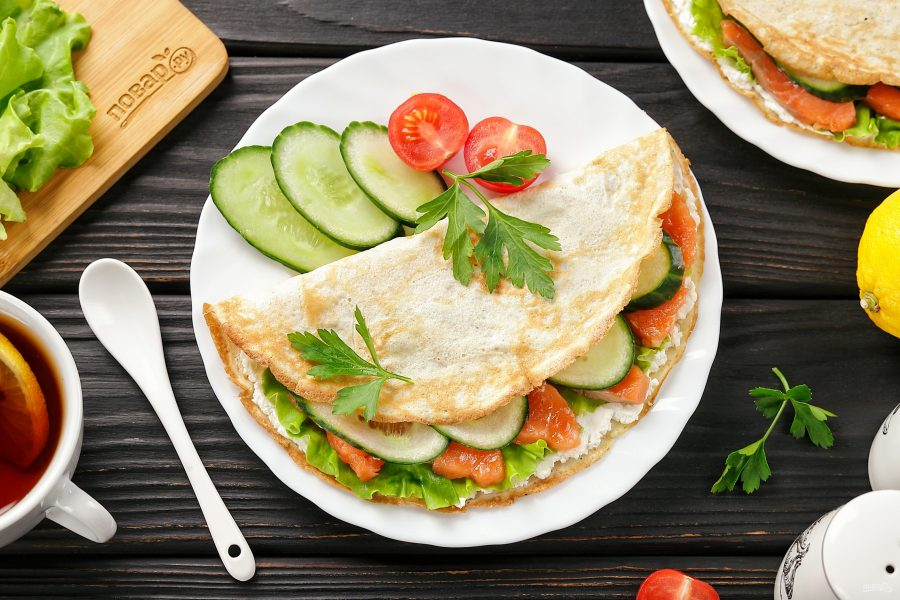
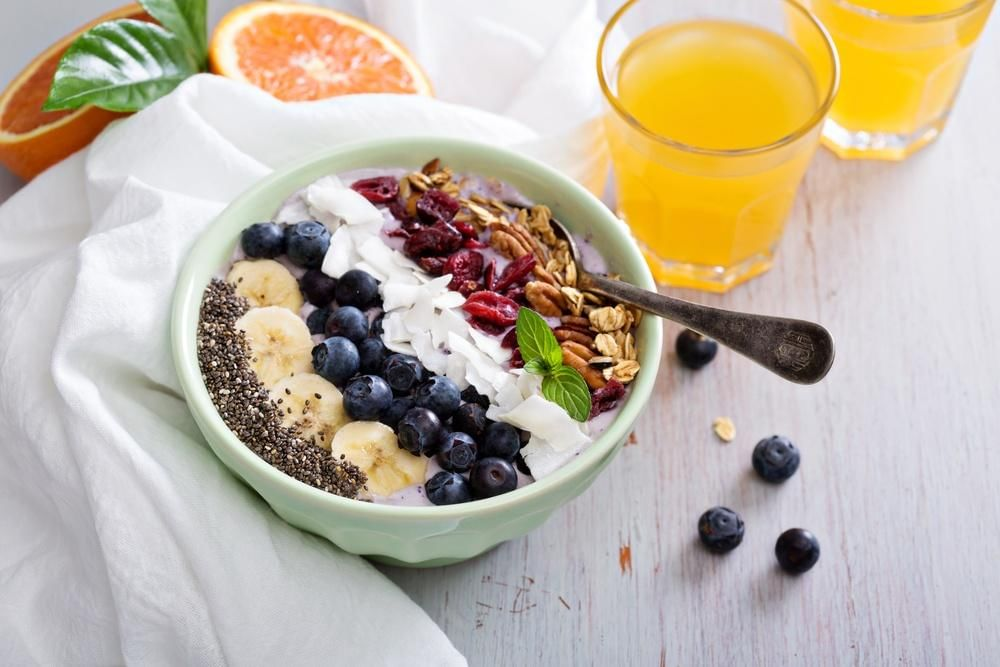
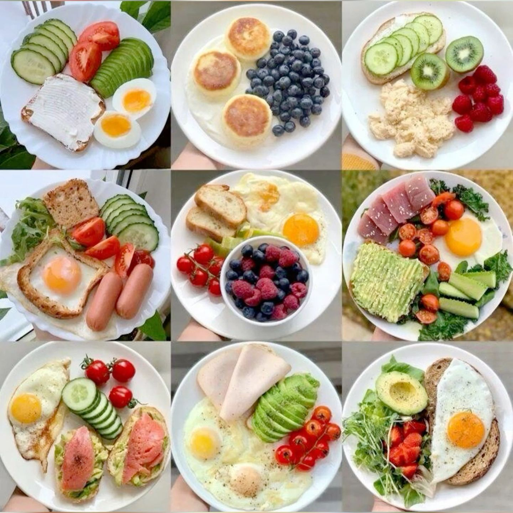
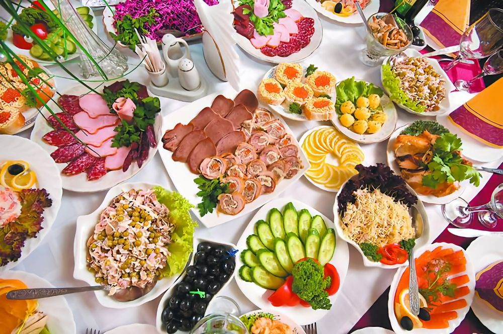

Без «срывов» и чувства вины.
NutriFlow превращает учёт калорий и БЖУ в спокойную привычку на пять минут в день.
Команда NutriFlow5 минут чтенияОбновлено в октябре 2026

Средний приём пищи в NutriFlow собирается за 2 минуты — из готовых рационов или своих продуктов.
12 400пользователей ведут дневник каждый день
−6,8 кгсредний результат за первые четыре месяца
92 %достигают цели по весу без жёстких диет
Большинство дневников питания бросают на второй неделе: слишком много ручного ввода,
слишком мало обратной связи. Мы собрали NutriFlow вокруг обратного принципа —
сначала удобство, потом дисциплина. Рационы собираются из готовых блоков,
калории и БЖУ считаются сами, а прогресс видно с первого экрана.
Ниже — три причины, из-за которых NutriFlow выбирают вместо таблиц и заметок в телефоне,
и реальные истории людей, которые ведут дневник больше полугода.

Учёт без рутины
Продукты добавляются поиском в два касания, а повторяющиеся приёмы пищи
сохраняются как шаблоны. Дневник за вчера заполняется копированием, а не заново.
База продуктов с готовыми КБЖУ на порцию
Шаблоны приёмов пищи и целых дней
Автоматический пересчёт остатка калорий

Планирование на неделю вперёд
Соберите рацион один раз в воскресенье — и распределите его по дням календаря.
NutriFlow подскажет, если день выходит за норму калорий или проседает по белку.
Календарь с переносом рационов между датами
Контроль нормы калорий и БЖУ на этапе планирования
Список покупок из запланированных блюд

Один дневник — вся семья
В профиле хранятся цели каждого члена семьи, а готовый рацион можно
применить к нескольким дням или поделиться им. Детские порции пересчитываются по возрасту.
Отдельные нормы калорий для каждого профиля
Общие рационы и списки покупок
Пересчёт порций под возраст и вес
Истории и результаты
«Перестала гадать, почему не уходит вес. Через месяц учёта увидела лишние 400 ккал из “полезных” перекусов — и всё встало на места».
Анна, 29 · −8 кг за 4 месяца
«Планирую рацион на неделю за один вечер. Раньше на это уходили часы мыслей “что бы поесть и не превысить норму”».
Марина, 34 · держит вес 11 месяцев
«Начала с цели “просто записывать”. Через полгода — первые 10 км и минус два размера одежды».
Ольга, 41 · −12 кг за 6 месяцев
Начните с одного приёма пищи
Заведите дневник сегодня: первый завтрак уже покажет, сколько вы на самом деле съедаете.